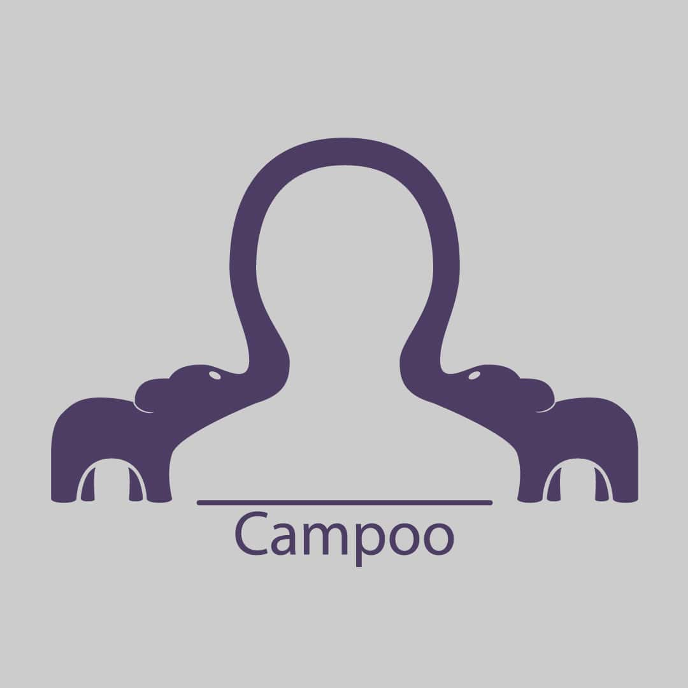

Actuellement en charge de la partie front-end en HTML/CSS et JSS, du site vitrine de notre projet tutoré chez Campoo, constitué de 6 personnes dont moi. A force de coder, j’ai assimilé des compétences que je n’avais pas auparavant ou que je pensais avoir alors que je me suis bercé d’illusion. Ces compétences me permettent de rendre des sites propres, accessibles visuellement et fonctionnels sur n’importe quel support numérique, et en prime avec l’écriture d’un code propre et bien structuré.
Pendant notre première année en MMI, nous avions remarqué un vrai problème de diffusion de l'information relative aux associations et aux clubs. Notre IUT était particulièrement isolé par rapport au campus et nous avons donc décider de nous concentrer sur ce vrai problème pour notre projet tutoré de deuxième année.
